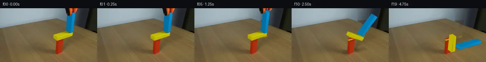

![首帧]()

Round 00
2026-11-05T19:13:51.127303+00:00像素候选变化代码 +323/−0inspection 更新
pixels e9e0fb7bcc1ca72b · code af2bb116fd9271bd
查看本轮 generate.py 真实 diff
--- previous/generate.py
+++ current/generate.py
@@ -0,0 +1,323 @@
+"""Deterministic local pixel continuation; no external scene or rendering engine."""
+from pathlib import Path
+import math
+import numpy as np
+import cv2
+from PIL import Image, ImageDraw, ImageFont
+from scipy.ndimage import gaussian_filter
+from artifact_io import save
+
+ROOT = Path(__file__).resolve().parent
+W,H = 256,144
+S = 3
+source = np.asarray(Image.open(ROOT/'first_frame.png').convert('RGB'))
+rng = np.random.default_rng(181)
+P = np.array([[1., -.82, .10],[-.29, -.53, -1.]])
+ORIGIN = np.array([150.,86.])
+GROUND = -37.
+
+
+def mask_polygon(points, blur=0):
+ m = np.zeros((H,W),np.uint8)
+ cv2.fillPoly(m,[np.round(points).astype(np.int32)],255)
+ return gaussian_filter(m.astype(float)/255,blur) if blur else m.astype(float)/255
+
+# The photographed object silhouettes are the only masks used.
+blue_mask = mask_polygon([(181,7),(199,12),(192,64),(185,69),(173,62),(176,18)])
+yellow_mask = mask_polygon([(140,71),(174,61),(185,65),(192,65),(191,75),(151,87),(140,80)])
+tool_left_mask = mask_polygon([(171,-2),(192,-2),(192,10),(188,19),(184,22),(177,21),(174,11)])
+tool_right_mask = mask_polygon([(192,-2),(205,-2),(203,5),(199,13),(191,13),(188,7)])
+object_mask = np.maximum.reduce([blue_mask,yellow_mask,tool_left_mask,tool_right_mask])
+remove = cv2.dilate((object_mask*255).astype(np.uint8),np.ones((3,3),np.uint8))
+background = cv2.inpaint(source,remove,4,cv2.INPAINT_TELEA).astype(float)
+
+# Restore the wall/table boundary hidden by the gripper and blue bar. The wall
+# is smooth; row interpolation preserves its existing illumination gradient.
+# Table texture comes only from an adjacent patch of this same input image.
+yy,xx = np.mgrid[:H,:W]
+seam = 27. + (xx-149.)*.395
+wall = yy < seam
+for y in range(52):
+ l=164 if y<34 else 159
+ rt=206 if y<48 else 213
+ lc=source[y,l].astype(float); rc=source[y,rt].astype(float)
+ for x in range(169,206):
+ if remove[y,x] and y < seam[y,x]-.8:
+ a=np.clip((x-l)/(rt-l),0,1)
+ background[y,x] = lc*(1-a)+rc*a
+# A softened repair mask avoids a sharp patch boundary in the wood grain.
+for y in range(35,89):
+ for x in range(138,205):
+ if remove[y,x] and y > seam[y,x]+.4:
+ sx=x-43; sy=y-5
+ patch=source[sy,sx].astype(float)
+ local=gaussian_filter(source.astype(float),3)[sy,sx] if False else None
+ # Locally sampled fine grain with a smoothly inpainted color field.
+ background[y,x]=background[y,x]*.70+patch*.30
+# Blend edge colors in the repair, leaving every unrelated pixel unchanged.
+repair_alpha=gaussian_filter((remove>0).astype(float),.48)
+background=source*(1-repair_alpha[...,None])+background*repair_alpha[...,None]
+background=np.clip(background,0,255).astype(np.uint8)
+Image.fromarray(background).save(ROOT/'.tmp/background.png')
+
+# The fixed red support retains all photographed exposed pixels. Its formerly
+# hidden top is reconstructed from its adjacent red paint after the bar leaves.
+red_mask=mask_polygon([(151,83),(167,81),(164,118),(151,123),(146,119),(147,85)])
+red_vertices=[(151,84),(166.5,79.8),(162,77.2),(147,81.3)]
+
+
+def project(v):
+ return ORIGIN + np.asarray(v) @ P.T
+
+
+def rotate_points(points,angle,pivot,translation):
+ a=math.radians(angle);c,s=math.cos(a),math.sin(a)
+ p=np.asarray(points,dtype=float)-pivot
+ q=p.copy()
+ q[:,0]=c*p[:,0]+s*p[:,2]
+ q[:,2]=-s*p[:,0]+c*p[:,2]
+ return q+pivot+translation
+
+
+FACES={
+ 'front':([0,1,5,4],np.array([0.,-1.,0.])),
+ 'left':([3,0,4,7],np.array([-1.,0.,0.])),
+ 'top':([4,5,6,7],np.array([0.,0.,1.])),
+ 'bottom':([3,2,1,0],np.array([0.,0.,-1.])),
+ 'right':([1,2,6,5],np.array([1.,0.,0.])),
… diff truncated; 236 more lines …